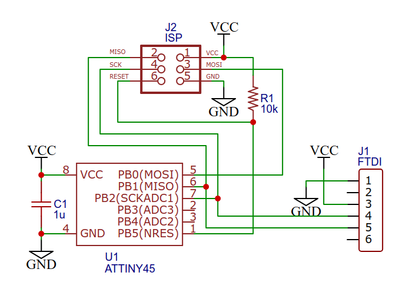

This page would show how you can design and produce your own PCB using CNC and soldering. The video above shows you how he designed his PCB from start to finished. For my example, I would be making a ATTiny45/85, let's start by downloading eagle.
Setting up eagle
Step 1
In case you did not read what is written above. Please download eagle first.
Step 2
Download this files and place it into the eagle's library. follow the photo if you can't find your eagle library.
Step 3
Start your Eagle software and click the circled area to make it active. It should be green before you start your project. You should be prepared to start making your first ISP board now.
Building your ISP
Getting the basics down
To add in "wires", use the "net" fuction to connect component together. To add in component, use the "add part" function.
It is important to label your "wires"! It would be used for placement of component afterwards.
Most of the component used in the project is under the folder "fab". This is important to save you time.
In case you are an idiot don't know what this symbol means. I would not be labeling it in my drawings. VCC would be the power source, Ground would be well.. the ground? and lastly the resistor.
Check for errors by clicking "ctrl + c" together.

I would be using this schematic to design my own ISP.
Component used in ATTiny45/85.
Component
Quantity
ATtiny85
1
10kΩ resistor
2
499Ω resistor
1
FTDI Header
1
6mm Button
1
1u capacitor
1
AVR ISP SMD
1
LED
1
VCC
4
Ground
5
Building the ISP
There are two methods for wiring your circuit board. To begin, manual wiring is used to connect wires from one component to another. When connecting multiple wires, the second method is more efficient and has fewer complications. This is accomplished by naming the wires with the same names that are attached to the respective ends of the component, and Eagle will automatically ask you if you want to connect the two components from the named wires.
My Completed schematic diagram
I like my work to be clean and easy to understand(for me at least). Check for errors before continuing Click here to copy cross reference your work.( ͡~ ͜ʖ ͡°)
After completing your schematic, it's time to generate your board.
Upon loading in, your component would be at the side.
With the help of the yellow lines provided by the software,orginize your board using wires(see left photo). Check for errors before continuing
Now we would need to change the settings the wire size and clearence. Start by selecting DRC
Just set the setting to the ones provided above and check for errors if any.
Now switch the layer to 46 milling and add an outline around your PCB. Click here to copy cross reference your work.( ͡~ ͜ʖ ͡°)
We would only need to get the "top" and "milling" layer so do the next step individually.
Exporting
You would need to export each layer as PNG. Select export as "image" and ensure "manochrome" is selected and resolution is 1000.
Your photo would look like this so just crop out the needed part or smt lol
You would need to remove the black box in the center of your outline. The tutorial I watched require me to use special software and waste my time smh. Follow my way or look for other solutions on your own just convert the JPG to PNG online.
Click here to copy cross reference your work.( ͡~ ͜ʖ ͡°)
It is at this point I learn that a Tiny 412 does not require addition parts to program. Hence I would be making a tiny 412.
Repeating what I did on top, I created a tiny 412 with my personal touch. Once again, if you would like to copytake reference on my work click here.
Doing a step-by-step for this process would be annoying so I would be explaning everything here.
Top left photo: I used a clean copper board as I am not sure about the size of my PCB and started milling the trace lines first.
Top middle photo: I cleaned my board to see if the traces are there or if I just wasted my time.
Top right photo:Everything looks good so I cut the outline after changing the bit and loading the outline codes in.
Bottom middle photo: My PCB was full of burrs! so I smooth the traces out with a smooth sanding block.
bottom right photo:My PCB and all it's glory waiting for component to be soldered in
Soldering your PCB
If are shit not good at soldering,watch the video above!
Things to take note!
The LED has a negative and positive side and the green blobe indicates the negative side.
Resistor values can be read by the first the first 3 values mutipled by the power of 10 of the 4 value. Example: 1001=100*10^1 and 1002=100*10^2
Position your electronics on the board, check your placement and take a photo of how your pcb should look like to ease the process of soldering.
This is PCB soldered. There is a lot of things that went wrong but I was rushing off that day.
Finished working product
It is important to test your board after you are done soldering. Click here to learn how.